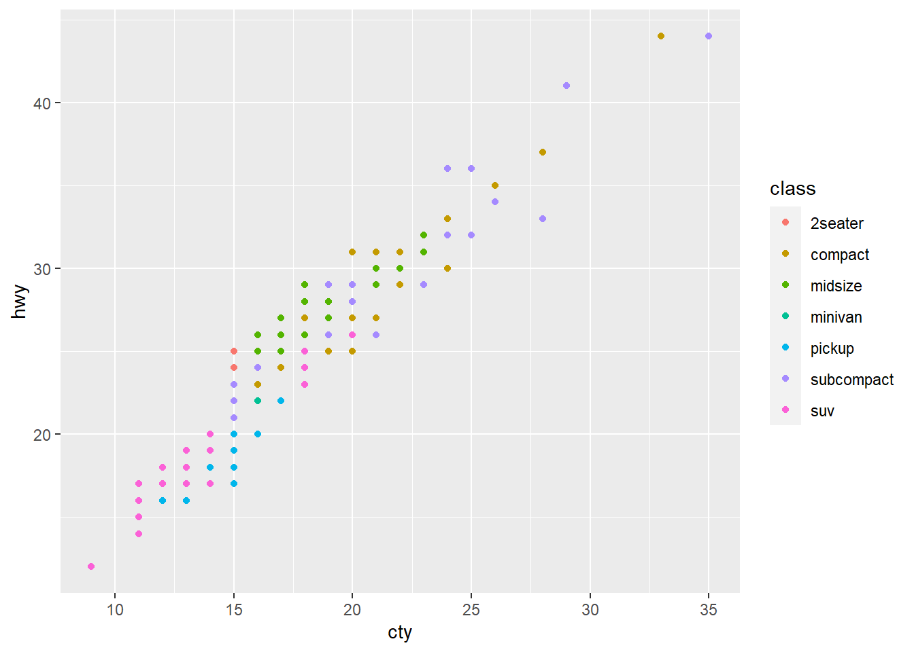
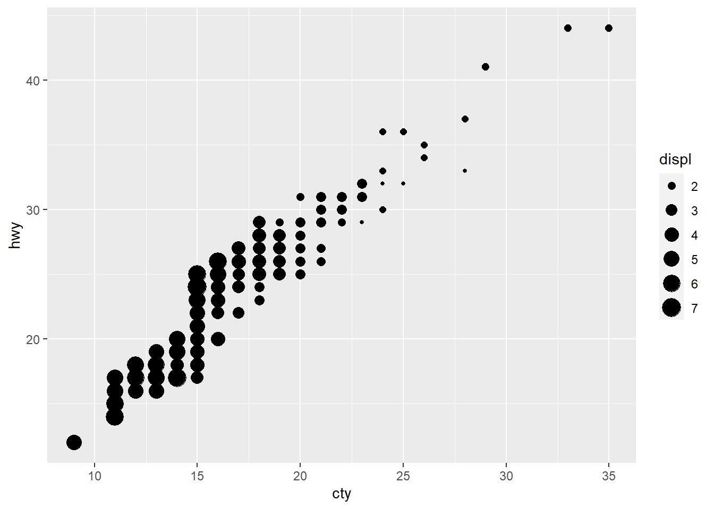

6.2 ggplot2における可視化の基本
Rの標準機能で提供されるplot()関数では、引数に描画したいデータが含まれるベクトルを指定します。一方、ggplot2においては、描画したいデータが含まれるデータフレームを指定するのが基本です。その上で、描画したいグラフの種類（geoms）と、グラフの描画要素（aesthetics）にデータフレーム内のどの変数を割り当てるかを記述します。ここでは、ggplot2に含まれるmpgデータを用いて説明します。mpgデータには1999年から2008年の間に毎年新しい車種を発売している主要な38のモデルについて、1999年と2008年の燃費などの値が記録されています。以下のコマンドにより、一般の道路における燃費ctyと高速道路における燃費hwy（単位はいずれもmiles per gallon）の散布図を描画できます。
ggplot(data = mpg, mapping = aes(x = cty, y = hwy)) +
geom_point()
まず、ggplot()関数のdata引数にデータフレームを指定し、mapping引数に、aes()関数を用いて、aestheticsへの対応を記述します。ただ、これだけでは、グラフは描画されません。ggplot()関数は、グラフの基本情報を設定するための関数と考えればよいでしょう。この情報にgeomsの情報を+演算子によって加えることで、実際にグラフが描画されます。ggplot2では、このように、グラフに対して新たな情報や機能を付加する場合、具体的には
- レイヤー（プロットやラベルや見出し）を追加
- 設定（グラフ全体のスタイルなど）を追加
- 座標系の変更
- 層別プロット（facet）の作成
をしたい場合に、+演算子でコマンドを接続するというスタイルをとっています。geom_point()関数は、aesで指定したxとyの各要素の組を平面上の点としてプロットするという命令です（つまり散布図を描画）。上のコマンドは、引数名を省略して記述すると以下のようになります。
ggplot(mpg, aes(cty, hwy)) +
geom_point()aes()関数の第1、第2引数はそれぞれxとyとの対応となっていますが、それ以降の引数に、描画要素の大きさ（size）や色（color）などへの対応を記述することができます。また、aestheticsはgeomsの方で記述することもできます。以下のようにすれば、classごとに色分けされた散布図が描画されます。
p <- ggplot(mpg, aes(cty, hwy))
p + geom_point(aes(color = class))
また、size = displとすれば、排気量（displ）の値に応じた大きさで散布図の点がプロットされます。
p + geom_point(aes(size = displ))
geom_point()関数はグラフィックスとして点を追加するための関数ですが、これ以外にも
geom_bar()：棒グラフgeom_boxplot()：箱ひげ図geom_histogram()：ヒストグラムgeom_line()：折れ線グラフ
などの関数が用意されています。使い方については、以降のセクションで説明していきます。